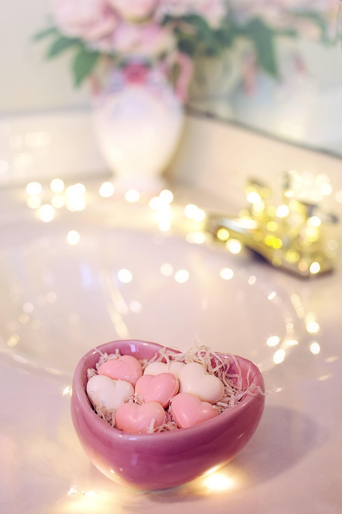

 Como o autocuidado muda vidas Pequenos gestos diários, como cuidar da pele e da alimentação, fortalecem nossa autoestima e saúde emocional. Ler mais
Oficinas de cosméticos naturais 2025 Veja como nossas oficinas transformam o cuidado pessoal em ferramenta de empoderamento. Ler mais